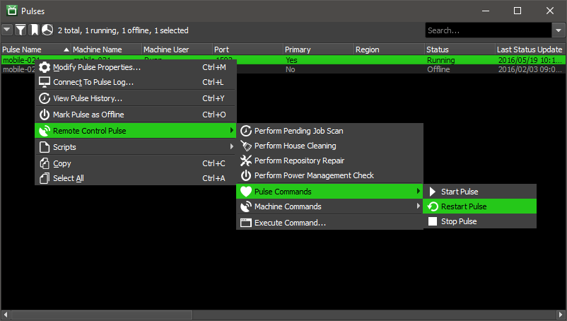
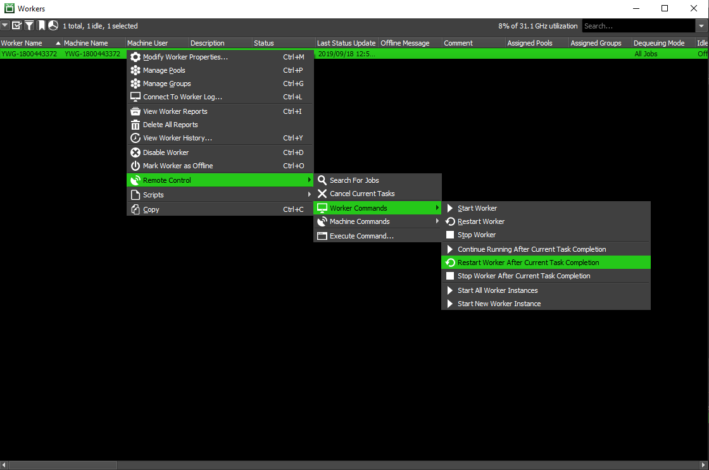

Upgrading or Downgrading Deadline¶
Overview¶
This will guide you through the process of upgrading or downgrading an existing Deadline installation.
Note
Starting with Deadline 10.1.23, Deadline and its components do not require a license. For older versions, check whether your license file needs to be updated BEFORE installing the new version of Deadline.
Versions Breaking Backwards Compatibility¶
This section contains notes about specific versions that break compatibility between different applications.
10.4.1 or Newer¶
On Windows, Deadline version 10.4.1 or above will run Deadline Launcher on startup _only_ for the user that has run the installer. For those that wish to run the Deadline Launcher on multiple users, please either run the Deadline Client installer on multiple users, or configure Windows to startup Deadline Launcher at launch for each desired user.
Deadline version 10.4.1 or above now checks for Extended Key Usage (EKU) fields on the RCS client and server X.509 certificates when using TLS. No action is needed if you use the X.509 certificates generated by the Deadline installer. If you generate your own certificates, you will need to make sure to properly specify the EKU field on the client and server certificates.
Deadline Client applications for Deadline 10.4.1 and later can only connect to a Remote Connection Server (RCS) with a minimum version of 10.4.1. You must upgrade your RCS before upgrading any connecting Clients when upgrading to version 10.4.1.
10.4.0 or Newer¶
Deadline Client applications for Deadline 10.4.0 and later can only connect to a Remote Connection Server (RCS) with a minimum version of 10.4.0. You must upgrade your RCS before upgrading any connecting Clients when upgrading to version 10.4.0.
Deadline 10.4.0 and later uses a new format for Monitor layout and style files. If you load a layout file that was created by an earlier version, it will be converted into the new format, and it will no longer work with earlier versions of Deadline. A backup of the layout file will be created alongside it with “Legacy Backup” appended to the layout file name, which can be used with prior Deadline versions.
Deadline 10.4.0 and later client installers change permissions to the system-wide client configuration folder. Users now have read-only access, except for the logs folder which retains read and write access. Deadline will use the user-level configuration folder for any user-specific overrides.
10.1.12 or Older to 10.1.13 or Newer¶
Deadline Client applications for Deadline 10.1.13 and later can only connect to a Remote Connection Server (RCS) with a minimum version of 10.1.13. If you are upgrading from Deadline 10.1.12 or earlier, you must upgrade your RCS before upgrading any connecting Clients.
Deadline Workers for Deadline 10.1.12 and earlier will not be able to render Arnold, Max, Maya, or RenderMan jobs with Usage Based Licensing (UBL) when connecting to a License Forwarder with a minimum version of 10.1.13. Due to this restriction, AWS Portal infrastructures launched from Deadline 10.1.13 and later can only support UBL for these applications when using AMIs with Deadline Worker versions 10.1.13 or later. If you have built Custom Amazon Machin Images (AMIs) for AWS Portal using these applications and require UBL, you will need to build and use new AMIs with a minimum version of 10.1.13.
Major Upgrades or Downgrades¶
If upgrading to a new major version (for example, Deadline 9 to 10), or downgrading from a new major version (for example, Deadline 10 to 9), you will need to install a NEW Repository and Database, and you will need to reinstall the Client software. This is necessary because there are often breaking changes between MAJOR releases. MINOR releases (including beta releases) such as Deadline 9.0.8.4 or 9.0.7.0 can happily be installed over the top of an existing Deadline 9.0 installation, but NOT Deadline 10.0.
Please note we do NOT officially support the archiving/importing workflow to transfer Deadline jobs from one MAJOR version to another. The reason for this is that MAJOR versions of Deadline allow us to carry out ‘breaking’ changes to our DB backend, so the dev team make no promises that the Deadline “job object” may or may not get touched. So, the official recommendation is always to let all jobs finish up rendering in one MAJOR version before moving over to the next. MINOR versions of Deadline are typically supported.
You should also reinstall your integrated submission scripts on your workstations, since it’s possible these were changed between major releases. If upgrading to Deadline 8 or later, it is absolutely necessary to reinstall these scripts. See the Application Plugins documentation for more information on how to set up the integrated submission scripts (where applicable).
Deadline licensing only takes into account the first two parts of the version number. For MAJOR version and MINOR version upgrades, a new license will be required. A new license is NOT required however for new PATCH versions. For example upgrading from Deadline 9.X.Y.Z to Deadline 10.A.B.C WOULD require a new license. Upgrading from Deadline 10.0.X.Y to Deadline 10.1.A.B WOULD also require a new license. Upgrading from Deadline 10.0.26.X to Deadline 10.0.27.Y WOULD NOT require a new license.
The license server should also be upgraded to ensure it will work with newer releases in case there are incompatibilities with the previous version of the license server.
Please refer to the following documentation for more information:
Minor Upgrades or Downgrades¶
If upgrading or downgrading to a minor version that is part of the same major release cycle (for example, Deadline 10.0 to 10.0.9.2, or Deadline 10.0.28.2 to 10.1.0.7), you can simply install over the existing installation. If you have Automatic Upgrades / Downgrades enabled, you can have the Clients automatically upgrade or downgrade themselves after upgrading or downgrading the Database and Repository. Automatic Upgrades / Downgrades can be enabled in the Client Setup section of the Repository Configuration.
Note
If you are upgrading from Deadline 10.0 to 10.1.1 and later (10.1.1+), there are important things to note:
Auto-upgrading from Deadline 10.0 to 10.1.1+ is supported, but auto-downgrading from 10.1.1+ to 10.0 is not, unless 10.0 was previously installed on the machine.
If you are using the Remote Connection Server (RCS), you need to upgrade the RCS to 10.1.1+ before upgrading all other Deadline Client installations to 10.1.1+. This ensures that the Clients can communicate properly with the RCS, because a 10.0 Client cannot communicate with a 10.1.1+ RCS.
If you are using a TLS-enabled Remote Connection Server (RCS), note that a 10.0 Client will not be able to communicate with a 10.1.1+ RCS. To upgrade from 10.0 to 10.1.1+, you will need to upgrade to 10.1.0 first, and then upgrade again to the latest 10.1.1+ version.
If you are using AWS Portal, you need to upgrade every AWS Portal component. This includes the Deadline Client on the machine connecting to AWS Portal, the AWS Portal Link service, any existing AWS Portal infrastructure and instances, and the IAM policy for your AWS Portal account.
You can also enable Remote Administration in the Client Setup section of the Repository Configuration under the Remote Control tab. This will make it easier to upgrade or downgrade your render nodes remotely.

Note that this upgrade/downgrade method is only supported when upgrading or downgrading an existing Repository installation. For example, it is NOT recommended to install the Deadline 10.0.9.2 Repository to a new location and then have your 10.0 Clients upgrade by pointing them to the new Repository path. Instead, you should first move your Repository installation and then do the upgrade once your 10.0 Clients are connected to the new Repository.
To ensure Deadline’s Automatic Upgrade/Downgrade system works correctly; make sure the service account used to run Deadline Launcher has the ability to start and stop the service. This permission on Windows for example can be added to the service account by an Administrator user as follows:
setacl.exe \\computername\deadline<VERSION>launcherservice /service /grant <serviceaccount> /start_stop
Note
<VERSION> is the Deadline major version, such as: 10.
Upgrading or Downgrading the Database and Repository¶
Launch the new Repository installer, and choose the existing Repository folder for the Installation Directory. Then choose the option to connect to an existing MongoDB database, and use the same Database Settings you used when installing the previous version (they should be pre-populated for you).


During the installation, all binaries, plugins, and scripts from the previous version will be backed up. You can find them in the backup folder in the Repository after the installation is complete. Note that any scripts or plugins in the ‘custom’ folder will not be affected when upgrading the Repository.
After upgrading or downgrading the Database and Repository, you can then upgrade or downgrade the Clients.
Upgrading or Downgrading Non-Render Nodes and Non-Workstations First¶
Before upgrading or downgrading all of your Client machines, you should first upgrade or downgrade the following applications if you are running them on your render farm.
Remote Connection Server
Pulse
Balancer (deprecated)
Forwarder
Web Service
If you don’t have Automatic Upgrades / Downgrades enabled, you will have to upgrade or downgrade these applications manually, which involves running the Client Installer on the appropriate machines. See the Client Installation Guide for more information.
If you have Automatic Upgrades / Downgrades enabled, all you have to do is restart the applications from the Launcher (which will execute an automatic Launcher bootstrap process based on the client recognizing a version change in the repository). Additionally, if you have Remote Administration enabled in the Repository configuration, you can easily execute a remote command to restart the Workers/Pulses/etc from the Monitor.
Note
Due to the removal of the Proxy Server in version 10.0.25, if doing a fresh install of versions 10.0.25 or higher, automatically downgrading to a version lower than 10.0.25 can cause issues with the Proxy Server. While it is recommended to use the Remote Connection Server instead of the Proxy Server, you can mitigate the issues in the following ways:
macOS
The DeadlineProxyServer10.app will not exist if downgrading from a fresh install of 10.0.25 or greater, and therefore will not be able to run. If you must use the Proxy Server, you will need to run the Deadline Client installer for a previous version.
Linux
The deadlineproxyserver file will not have run permissions by default. You will need to add run permissions to it before it can run.
Windows & Linux
The Deadline Launcher menu will not show the option to launch a Proxy Server. If you want to re-enable that option, add IncludeProxyServerInLauncherMenu=true in a new line in your local deadline.ini file.
This process is actually identical for the Pulse, Balancer (deprecated), and Forwarder, so let’s use the Pulse panel as an example. Right-click on the Pulse instance in the list and select Remote Control Pulse -> Pulse Commands -> Restart Pulse. Note that if you don’t see the Remote Control menu, you will have to enter Power User Mode from the Tools menu. This sends a remote command to the Launcher running on the remote machine to restart Pulse, which will trigger the upgrade. After Pulse has been restarted, you can check the Version column in the Pulse panel to confirm that it’s now running the new version.
You can repeat this process for the Balancer (deprecated), and Forwarder as necessary. For the Web Service though, you’ll notice that there isn’t a panel in the Monitor for it. Currently, the only way to update the Web Service is to run the Client Installer on the machine that it’s running on.
See the Remote Control documentation for more information about the remote commands that are available.
Upgrading or Downgrading the Render Nodes¶
If you don’t have Automatic Upgrades / Downgrades enabled, you will have to upgrade or downgrade the Clients manually, which involves running the Client Installers on the machines. See the Client Installation Guide for more information.
If you have Automatic Upgrades / Downgrades enabled, all you have to do is restart the Worker application on each render node through the Launcher. The Client will notice that the Repository has been upgraded or downgraded, and will automatically upgrade or downgrade itself. In addition, the next time artists launch the Monitor on their workstations through the Launcher, their installation will also be upgraded or downgraded.
To restart the Workers remotely, Remote Administration must be enabled. Select the Workers you want to upgrade or downgrade in the Monitor while in Power User mode, then right click and select Remote Control -> Restart Workers. If the Workers are currently rendering and you don’t want to disrupt them, you can choose the option to Restart Workers After Current Task instead. This option will allow the Workers to upgrade or downgrade after they finish rendering their current task to prevent the loss of any render time. See the Remote Control documentation for more information.
After restarting the Workers, several Workers may appear offline or a message may pop up saying the certain Workers did not respond. This may occur because all the Workers are trying to upgrade or downgrade at once. Wait a little bit and eventually all the Workers should come back online. After the Workers have been restarted, you can check the Version column in the Worker panel to confirm that they’re all now running the new version.
Upgrading or Downgrading Workstations¶
This is a somewhat manual process, so it’s recommended that you send out a notification to your staff to let them know the upgrade is in place. The next time any of the artists or wranglers launch their Monitor (or any Deadline application) through their Launcher, the upgrade will take place automatically before launching the chosen application.
Upgrading or Downgrading Draft¶
It’s not uncommon for a new version of Draft to be included with a minor release of Deadline. However, there might be situations where you want to upgrade or downgrade Deadline, but stick with the current version of Draft that you are using. To do so, simply follow these steps:
Run the Repository Installer as explained above to upgrade or downgrade Deadline. During installation, the Repository installer will back up the previous version of Draft to the “backup” folder in your Repository directory.
Note the location where you installed the Repository. This will be referred to as
[REPOSITORY]for the remaining steps.After the Repository installation has finished, navigate to
[REPOSITORY]/backup/mostRecent. This folder contains everything that was backed up from the previous installation.Copy the contents of
[REPOSITORY]/backup/mostRecent/draftto[REPOSITORY]/draft, and overwrite the existing files. This will update the Draft libraries that are used.Copy the contents of
[REPOSITORY]/backup/mostRecent/submission/Draftto[REPOSITORY]/submission/Draft, and overwrite the existing files. This will update the Quick Draft options so that they match the version of Draft you’re using.
Upgrading or Downgrading AWS Portal¶
If you’re currently on a version older than Deadline 10.1.8, and wish to upgrade to latest Deadline, you must also upgrade to latest AWS Portal Server. This is required as starting Deadline 10.1.8, we changed how Deadline’s AWS Identity and Access Management (IAM) resources are created, and we’ve started using AWS Managed Policies.
Typically, upgrading or downgrading AWS Portal will require you to cancel any running Spot Fleet requests and stop any running Infrastructures. To learn more, see Instructions for Updating Deadline when using AWS Portal.

{kind=link}
{kind=link}